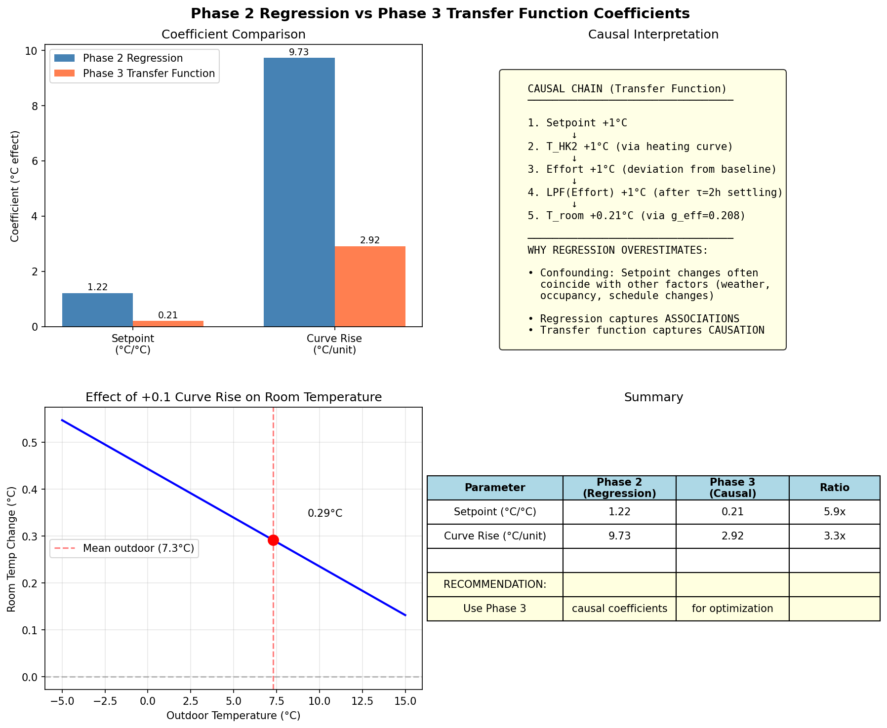

Transfer Function Integration Analysis
The Problem
Phase 4 optimization uses regression coefficients from Phase 2 that predict how room temperature
responds to heating parameter changes:
Parameter Phase 2 Coefficient Interpretation comfort_setpoint +1.22°C per °C +1°C setpoint → +1.22°C room curve_rise +9.73°C per unit +0.1 rise → +0.97°C room
Issue: These coefficients are from observational data - they capture associations ,
not causal effects . If setpoint changes historically coincided with other factors
(weather, occupancy, schedule), the regression attributes all effects to the setpoint.
The Transfer Function (Phase 3)
The transfer function models the physical causal chain:
T_room = offset + g_outdoor×LPF(T_outdoor, 24h) + g_effort×LPF(Effort, 2h) + g_pv×LPF(PV, 12h)
Where:
- g_effort = 0.208 (STABLE: coefficient of variation = 9%)
- Effort = T_HK2 - baseline_curve
- T_HK2 = setpoint + curve_rise × (T_ref - T_outdoor)
Deriving Causal Coefficients
Following the causal chain:
Setpoint +1°C → T_HK2 +1°C (direct via heating curve)T_HK2 +1°C → Effort +1°C (deviation from baseline)Effort +1°C → LPF(Effort) +1°C (after τ=2h settling)LPF(Effort) +1°C → T_room +0.208°C (via g_effort)
Parameter Phase 2 (Regression) Phase 3 (Causal) Ratio
comfort_setpoint
1.22°C/°C
0.21°C/°C
5.9x
curve_rise
9.73°C/unit
2.92°C/unit
3.3x
The regression overestimates effects by 3-6x !
Why This Matters for Optimization
If Phase 4 uses the inflated regression coefficients:
It overestimates temperature gains from setpoint increases
It overestimates temperature losses from curve rise reductions
Optimization may select strategies that don't actually achieve predicted comfort
Recommendation: Update Phase 4 to use causal coefficients from the transfer function.
Updated coefficients:
comfort_setpoint: 0.208 (was 1.218)
eco_setpoint: 0.208 (was -0.090)
curve_rise: 2.92 (was 9.73)
Important Caveats
Transfer function R² = 0.68 - captures only 68% of variance.
The adaptive model (RLS) achieves 0.86 but parameters vary over time.g_effort is stable (CV=9%) but g_outdoor varies significantly (CV=95%)Schedule effects are indirect - comfort_hours doesn't directly affect
temperature; it changes the proportion of time in comfort vs eco modeNonlinear effects - curve_rise effect depends on outdoor temperature:
larger effect at colder outdoor temps
Integration Proposal
Replace the simple linear adjustment in Phase 4 with a physics-based simulation:
# Current (problematic):
delta_T = coef_setpoint × (setpoint - baseline)
T_room_adjusted = T_room_historical + delta_T
# Proposed (physics-based):
for each timestep:
T_HK2 = compute_heating_curve(setpoint, curve_rise, T_outdoor, schedule)
Effort = T_HK2 - baseline_curve(T_outdoor)
T_room_pred = offset + g_eff × LPF(Effort) + g_out × LPF(T_outdoor) + g_pv × LPF(PV)
This ensures the optimization respects the physical constraints of the system.

Figure: Comparison of Phase 2 regression vs Phase 3 transfer function coefficients